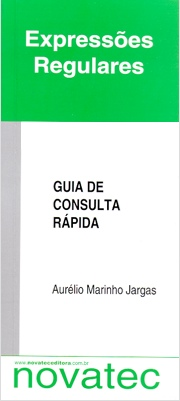

|
Escrevi este livro em 2001, ele foi a primeira publicação nacional sobre Expressões Regulares. Como nunca gostei de livros técnicos (são chaaatos), tentei fazer algo diferente: um texto didático e divertido, temperado com piadinhas e diálogos, para ensinar e divertir ao mesmo tempo. E não é que o povo gostou? Outro diferencial deste livro, é que desde o lançamento ele está disponível na internet, de maneira integral e gratuita. Eu já fazia software livre, então convenci a editora a apoiar a causa do conhecimento livre. A versão impressa esgotou-se das livrarias em 2006, mas a versão online continua aqui, inabalada. Então, que tal começar a leitura do livro agora? Siga os tópicos ou use a caixa de pesquisa para encontrar o que deseja. Mas olha, eu recomendo uma leitura completa, iniciando pela Introdução, pois o texto vai progredindo aos poucos, ensinando os conceitos um de cada vez. Relaxe e divirta-se! |
ISBN 85-7522-011-X
96 páginas Formato de bolso 10,5x23cm Lançado 31 de Julho de 2001 Tiragem 3.000 (esgotada)  |